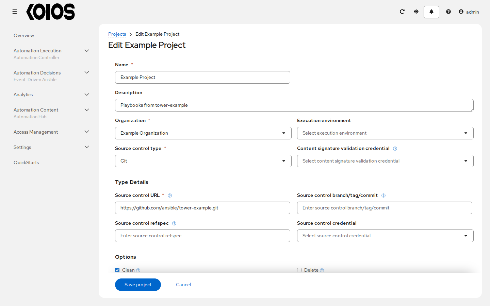
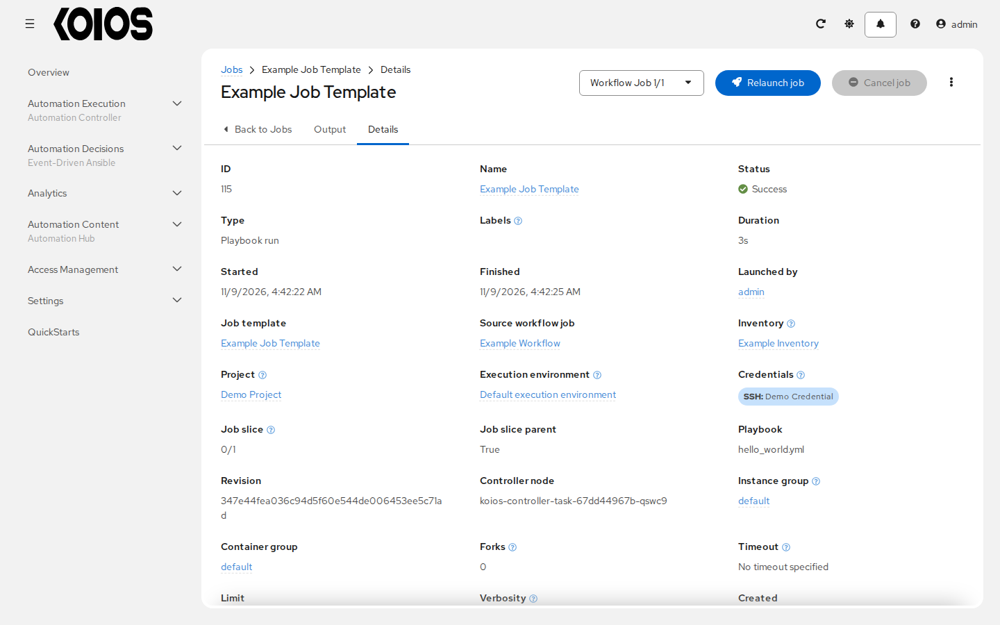

Projects specify the branch, tag, or reference to use from source control in the scm_branch field. In the project form this is the Source control branch/tag/commit field, next to Source control refspec:

Projects have the Allow branch override option. When checked, project admins can delegate branch selection to the job templates that use that project (requiring only project use_role).

Source tree copy behavior
Every job run has its own private data directory. This directory contains a copy of the project source tree for the given
scm_branch the job is running. Jobs are free to make changes to the project folder and make use of those changes while it is still running. This folder is temporary and is cleaned up at the end of the job run.
If Clean is checked, automation controller discards modified files in its local copy of the repository through use of the force parameter in its respective Ansible modules pertaining to git or Subversion.

Project revision behavior
Typically, during a project update, the revision of the default branch (specified in the Source control branch/tag/commit field of the project) is stored when updated, and jobs using that project will employ this revision. Providing a non-default branch (not a commit hash or tag) in a job, the newest revision is pulled from the source control remote immediately before the job starts. This revision is shown in the Revision field of the details of the job and of its respective project update.

Consequently, offline job runs are impossible for non-default branches. To be sure that a job is running a static version from source control, use tags or commit hashes. Project updates do not save the revision of all branches, only the project default branch.
The branch field is not validated, so the project must update to assure it is valid. If this field is provided or prompted for, the Playbook field of job templates will not be validated, and you will have to launch the job template in order to verify presence of the expected playbook.
Git Refspec
The Source control refspec field specifies which extra references the update should download from the remote. Examples are:
refs/*:refs/remotes/origin/*: fetches all references, including remotes of the remote
refs/pull/*:refs/remotes/origin/pull/*(GitHub-specific): fetches all refs for all pull requests
refs/pull/62/head:refs/remotes/origin/pull/62/head: fetches the ref for that one GitHub pull request
For large projects, you should consider performance impact when using the 1st or 2nd examples here.
The Source control refspec parameter affects the availability of the project branch, and can allow access to references not otherwise available. The examples above allow the user to supply a pull request as the branch, which would not be possible without the Source control refspec field.
The Ansible git module fetches refs/heads/* by default. This means that a project’s branches and tags (and commit hashes therein) can be used as the branch if Source control refspec is blank. The value specified in the Source control refspec field affects which branches can be used as overrides. Project updates (of any type) will perform an extra git fetch command to pull that refspec from the remote.
For example: You could set up a project that allows branch override with the 1st or 2nd refspec example –> Use this in a job template that prompts for the branch –> A client could launch the job template when a new pull request is created, providing the branch pull/N/head –> The job template would run against the provided GitHub pull request reference.
For more information on the Ansible git module, see https://docs.ansible.com/ansible/latest/collections/ansible/builtin/git_module.html.